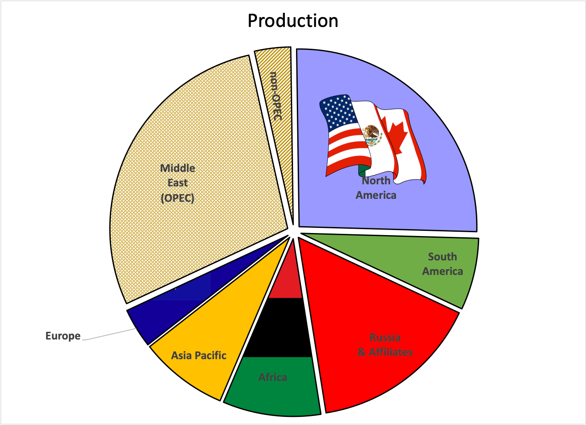
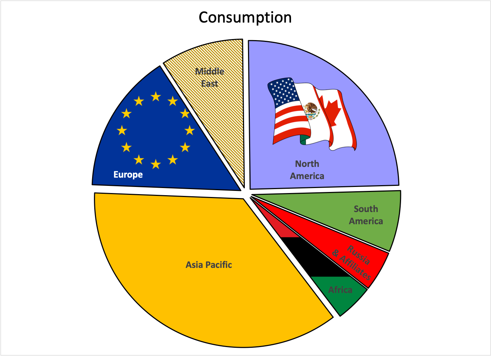
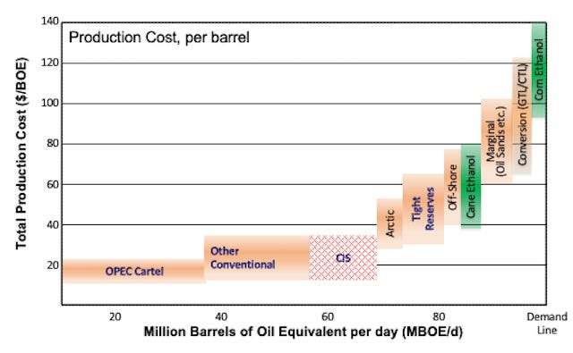
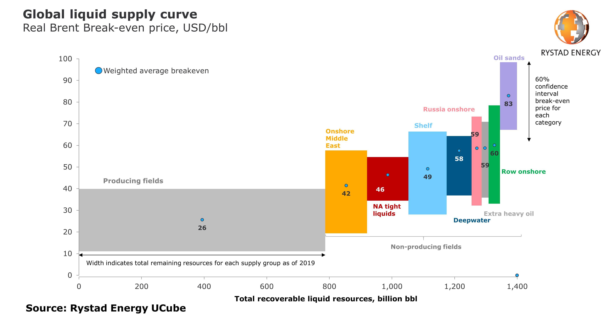

You can read Healing for free, and you can reach me directly by replying to this email. If someone forwarded you this email, they’re asking you to sign up. You can do that below.
If you really want to help spread the word, then pay for the otherwise free subscription. I use any money I collect to increase readership through Facebook and LinkedIn ads.
Thank you for reading Healing the Earth with Technology. This post is public so feel free to share it.
Today’s read: 8 minutes.
With Russia’s invasion of Ukraine dominating the news, I thought I’d draw a connection between that conflict and global energy that, in my view, is not getting sufficient coverage. Energy policy should be a crucial part of an informed national debate. As it turns out, both Nancy Pelosi and Lindsey Graham are calling for playing the “oil” card (banning imports of Russian oil) as an economic weapon. At the same time, the Biden administration has come out against it, with Secretary of State Antony Blinken saying, “There’s no strategic interest in reducing the global supply of energy. The immediate effect would be to raise prices at the pump for Americans and also to pad Russian profits with rising prices.”
For my readers, it’s essential to comprehend, at a high level, what the war of aggression in Ukraine and energy flows signifies in the world’s economy. Holoeconomics is a valuable framework to achieve this understanding.
First, what of war? Clausewitz famously said that “Der Krieg ist eine bloße Fortsetzung der Politik mit anderen Mitteln,” which is usually translated as “War is the mere continuation of politics by other means.” But the German word “bloße” (translated as “mere”) can also mean “naked” or “unclothed”, so my preferred translation is “War is the fully exposed extension of politics using alternative resources.” Relevant to Ukraine, Clausewitz also wrote:
“But there is another reason which can bring the act of war to a standstill, namely the imperfect understanding of the case. Every military leader only knows his own position exactly while his knowledge of the position of the enemy can only be based on imprecise information. He can therefore err in his judgment and, as a result of this error, he may believe that any disruption is of his opponent's doing when it is actually of his own. This lack of insight could result in untimely action just as often as untimely inaction and would therefore produce both the delay and the acceleration of the act of war in equal measure. Uncertainty will always have to be regarded prima facie as one of the factors that can bring the act of war to a standstill. But if we reflect on our tendency to overestimate the power of our opponents, because it lies in human nature to do so, we must admit that imperfect information must contribute significantly to delays in war, thus reducing its effectiveness.
The possibility of stagnation introduces a new moderation into the act of war, reducing its effectiveness with time, removing hazards in passing, while increasing the means of restoring balance. The greater the tensions that gave rise to the war, that is, the greater its initial energy, the shorter such pauses will be; the weaker the justification for war, the longer. Stronger motivations increase willpower, and this, as we know, is always a factor, that generates leverage.”
Carl von Clausewitz “Vom Kriege” (On War; 1832), Chapter 1 (“What is war?”) part 18 (“A second reason lies in the imperfect understanding of the case”1) Translation mine from the original German.
There are many current themes to this historical viewpoint. I’ll leave it up to you to connect the dots. Time and historians will shape the story for the Russia-Ukraine conflict, but the main take-home is that war hasn’t changed over time. Strong defiance, as shown by the Ukrainians, can lead to a standstill even in the face of long odds, especially when the motivation for war is weak.
Now, on to holoeconomics. Here’s what the world flow of oil looks like:


Notably, the Americas are pretty much self-sufficient. In other words, the “wedges” for production and consumption are nearly equal—if the rest of the world went away, we’d be insulated (at least in terms of energy flow). The Middle East, Russia, and Africa are net producers. At the same time, Europe and, most significantly, the Asia Pacific (which includes densely populated China and India, plus industrialized Japan and South Korea) are net consumers.
If the United States unilaterally banned imports of Russian oil, it would have little direct effect on our energy supply for domestic consumption. But unless we convinced others to follow our lead (as with other sanctions), it would also have little impact on the Russian economy. There’s not enough transoceanic trade in oil to unilaterally affect Russia. But, if our European allies chose to join us, they could face a dark future unless other suppliers replaced their Russian imports. Plus, the Asia Pacific countries would also need to join us. Given geography and pipeline infrastructure, that is unlikely. Significant, new pipelines flow from Russia into China (the largest consumer in the region) as part of the Chinese government’s “Belt and Road” initiative. Despite the benefit of a stable world order to international trade, the Chinese government has been unwilling so far to fall in line with the broad international condemnation of Russia’s aggression.
Unless there is an alternative source of oil for Europe and Asia, banning imports of Russian crude to North America is a political statement without practical consequence. Even if our current allies joined in, it would only change the direction of Russian oil from flowing west to flowing east, and supply uncertainty would likely cause prices to rise as the supply chain tips toward hoarding. Asian economies, particularly China, would be the primary beneficiaries. And an import ban may not be necessary. Even without a government mandate, international outrage may already be working: “Russian exporters have been offering the country’s highest-quality oil at a discount of up to $20 a barrel in recent days but have found few buyers,” as reported by the New York Times.
Let’s look at a snapshot of the economics of oil production:

And some actual data to show that the costs are in line with reality:

In the top graph, the OPEC cartel is the lowest cost producer of petroleum, but the cartel fixes production quotas for its member states to keep prices high. How does it set its total quota? Well, toward the far right, I’ve illustrated the “demand line,” which will vary based on price—the classic supply-demand tradeoff of Econ 101. If the cartel did not restrict production, their market share would increase, but prices would drop due to competition as the demand became saturated. On the other hand, if the cartel reduced production dramatically, prices would soar because demand would exceed supply. The profit-maximizing level of output for OPEC is somewhere in between. I find it helpful to imagine a market price, say $100 per barrel. OPEC’s profits are then described by the area of a rectangle above the production quota, from the cost floor to the price. In the above, that would be 35MBOE/d multiplied by ($100 - $20), or about $3 billion per day. If demand is fixed, the production quota is like a dial, turn it up, and prices decrease, turn it down, and prices increase. Of course, it’s more complicated than that, and profit maximization is only one motivation: OPEC can choose to increase production to squeeze competition (like biofuels), or they can choose to decrease production to conserve resources.
The bottom graph shows 800 billion barrels from producing fields alone, or about 20 years supply at today’s demand. It also shows how meager a release of 60 million barrels from a strategic reserve is at the scale of global energy. That, too, is a political action with little practical consequence.
The critical development that links back to Ukraine is that beginning in 2017, OPEC and Russia colluded on production quotas (referred to as “OPEC+”). Full coordination with Russia gave the cartel even more pricing power (top chart). However, because of increased production from the U. S. (attributed to improved recovery technologies) and the steep drop in demand due to COVID-19, OPEC+ fell apart, leading to a “price war” in early 2020. That short-lived war is now over, and OPEC+ is back together again.
So, the key to ending the Ukraine conflict expeditiously is not in Washington. It’s in Riyadh. Unfortunately, the leaders of Saudi Arabia (the major OPEC producer) have chosen to stick with Russia, at least for now. Imagine that OPEC has the capacity (and they probably do) to replace the Russian supply of oil to Europe and the Asia Pacific at today’s prices (~$100/barrel). If the Saudis played that card, a dramatic increase in production would completely isolate Russia, giving Putin little recourse but to back down. And it has a precedent: The United States has already used its surplus of natural gas to ease European concern over Russian supplies.
Energy binds the world economy together, and the strategic use of energy policy/politics is an essential factor affecting global conflicts. I have provided one aspect of a complicated interconnection, but I have attempted to support it with data. Many more energy-related factors include oil and gas transportation via the Black Sea and the Soviet-era distribution logistics of domestic Russian fuel supplies (leading to a stalled invasion). Like the mantra of the Watergate investigations of the 1970s, “Follow the money”, we can “follow the energy” to understand (and affect) Ukraine.
Clausewitz cites the first reason familiar to players of the board game Risk, where defenders have a significant advantage over attackers.